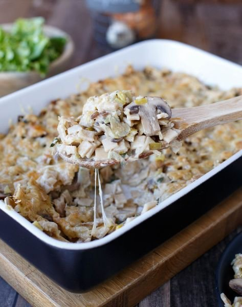

Croziflette poireaux champignons
Ingredients
4×
- 1 oignon
- 3 poireaux
- 250 g de champignons de Paris
- 2 gousses d'ail
- 230 g de crozets
- huile d'olive
- 1 c. à s. de persil
- sel
- poivre
- 20 cl de crème liquide
- 90 g de comté râpé ou reblochon

Préparation
Étape 1
Émincer 1 oignon, 3 poireaux et 250 g de champignons de Paris. Hacher 2 gousses d'ail.
Étape 2
Cuire 230 g de crozets 15min.
Étape 3
Rissoler oignon et poireaux 5min dans de l’huile d'olive. Ajouter champignons, ail, 1 c. à s. de persil, sel et poivre, cuire encore 10min.
Étape 4
Égoutter les crozets et les mélanger aux légumes avec 20 cl de crème liquide. Verser dans un plat et parsemer de 90 g de comté râpé ou reblochon.
Étape 5
Gratiner 20min à 200ºC.